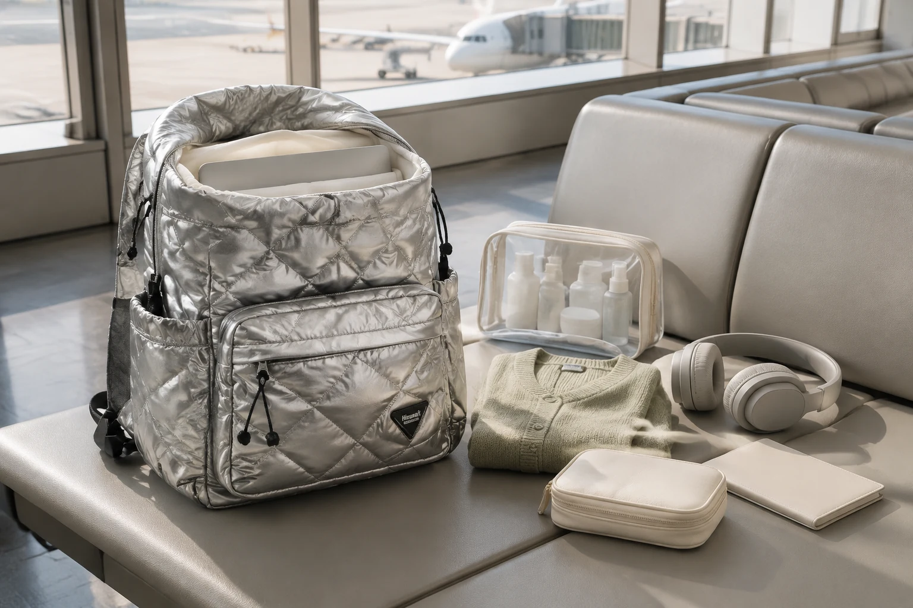

공항에서 다시 열 가방은 출발 전에 순서 정하기

공항에 가져갈 백팩은 출발할 때 닫힌 모습만으로 준비가 끝나지 않습니다. 체크인에서 자료를 보여주고 보안검색에서는 안내에 따라 물건을 꺼내며 탑승 뒤에는 필요한 묶음만 사용합니다. 집에서 넣는 순서와 공항에서 다시 여는 순서가 다르면 가방의 여러 물건을 펼치게 될 수 있습니다. 짐을 나누기 전에 실제 이용 항공사와 출발 공항, 환승지의 안내를 확인하고 그 조건에 맞춰 꺼낼 묶음을 정해야 합니다.
항공사의 휴대 수하물 크기와 무게, 개수는 예약과 이용 조건에서 확인합니다. 예전에 들고 탔던 가방이라도 이번 조건과 같다고 정하지 않습니다. 백팩 외에 다른 손가방이나 구매 물품을 가져갈 계획이라면 어떻게 계산되는지도 해당 항공사에 확인할 정보입니다. 가방의 모델명이나 여행용이라는 상품 이름으로 기내 반입이 허용된다고 판단할 수는 없습니다. 제품의 실제 외형과 당일 운반할 짐을 현재 안내에 대조하는 순서가 필요합니다.
액체류를 확인하는 기준
인천국제공항 제한물품 안내는 국제선 액체류에 대해 개별 용기당 100ml 이하의 용기를 1인당 1L 비닐 지퍼백 한 개에 넣는 기준을 안내합니다. 내용물을 덜어 담는 것만 생각하지 않고 용기 자체의 표시를 확인해야 합니다. 실제 이용 조건과 예외는 해당 공항과 항공사에서 다시 확인하세요. 국내선과 국제선, 환승이 있는 일정의 조건을 한 가지 목록으로 합쳐 쓰지 않으면 확인할 범위가 분명해집니다.
액체류를 준비했다면 검색에서 안내받은 방식으로 꺼낼 수 있는 위치를 정합니다. 작은 용기를 여러 파우치에 흩어 넣으면 가방의 여러 칸을 열어야 합니다. 안내에 맞게 준비한 묶음을 어디에 둘지 생각하고 다른 개인 물건과 겹치지 않게 놓을 수 있습니다. 실제 용기의 닫힘도 따로 확인합니다. 규정에 맞는 포장과 백팩 안에서 누르지 않는 배치는 다른 준비이므로 각각 살펴보면 됩니다.
보조배터리나 다른 제한 물품은 종류와 표시를 확인한 뒤 현재 안내에서 대조합니다. 항공보안365의 물품 검색을 이용하거나 항공사에 문의할 수 있습니다. 배터리는 일반 케이블 파우치의 빈자리만 보고 넣지 않고 반입과 보관에 관한 안내를 먼저 확인해야 합니다. 이번 여행에 어떤 물건을 가져갈지 확실히 알아야 관련 기준도 찾을 수 있습니다. 명칭을 모르는 부품이 있다면 먼저 제품 설명에서 정보를 확인하세요.
가방의 예시로 Himawari No.1111 제품 정보를 살펴볼 수 있습니다. 이 제품의 외부 크기는 가로 43 × 세로 47 × 폭 24cm이며, 선택한 항공사의 수하물 기준과 대조할 정보입니다. 이 제품이 모든 항공편에서 반입 가능하다는 의미로 읽지 않습니다. 실제 짐을 담은 상태의 외형과 함께 들 다른 물건의 조건까지 확인한 뒤, 공항에서 꺼낼 묶음이 어디에 놓일지 준비하면 됩니다.

서류와 기기가 움직이는 순간
여권과 예약 확인 자료, 지갑은 사용 뒤 돌아갈 자리를 정합니다. 확인을 위해 꺼냈다가 다른 물건 위에 놓으면 다음 이동에서 다시 찾게 됩니다. 전자 탑승권을 쓰는 경우에는 화면을 다시 여는 위치와 연락 도구를 준비합니다. 공용 공간에서 다른 개인 정보까지 함께 펼칠 필요 없도록 확인할 자료만 보여줄 수 있는 순서를 정하세요. 소지품을 밖에서 쉽게 보이는 곳에 계속 두기보다 위치를 기억할 수 있는 닫힌 곳에서 관리하면 됩니다.
전자기기를 가져간다면 검색에서 분리 안내가 있을 때 꺼낼 수 있는지 봅니다. 기기와 케이스의 실제 외형을 가방 입구와 대조하고 충전 도구는 따로 찾을 수 있게 둡니다. 검색 절차는 현장 안내를 따르며 모든 공항이 같은 방식이라고 가정하지 않습니다. 기기를 꺼낸 뒤 빈 공간에 다른 짐이 들어가면 되담는 동작이 달라질 수 있으므로, 사용한 물건은 원래 묶음으로 돌아갈 위치를 유지하면 됩니다.
검색을 마친 뒤에는 꺼낸 물건을 회수할 수 있는 자리에서 정리합니다. 먼저 확인 자료와 기기를 챙기고 남은 파우치를 모아 가방의 여밈을 닫습니다. 검색대 위에서 여러 물건을 계속 들고 이동하기보다 안내된 정리 공간을 이용할 수 있습니다. 어떤 묶음을 꺼냈는지 알고 있으면 빠진 것을 확인할 범위가 줄어듭니다. 겉옷이나 별도 가방을 함께 두었다면 백팩 외에 회수할 짐의 개수에도 포함하세요.
기내에서 사용할 범위
탑승 후 쓸 물건은 실제 비행 중 사용할 정도로 따로 생각합니다. 연락 도구나 읽을 자료, 개인에게 필요한 물건을 고르고 숙소에서만 쓸 짐과 구분합니다. 보관 위치와 설비 사용은 해당 항공편의 안내를 따릅니다. 가방을 큰 짐의 보관 공간에 두기 전에 사용할 묶음을 꺼낼 수 있는지 준비하면 필요할 때 다시 여러 물건을 움직일 일을 줄일 수 있습니다. 물품 반입이 가능하다는 것과 비행 중 사용 가능한 조건은 따로 확인할 부분입니다.
환승이 있다면 다음 공항의 검색이나 탑승에서 다시 확인할 자료를 유지합니다. 첫 구간을 마쳤다고 여행 서류를 가방 깊은 곳으로 옮기면 다음 확인에서 다시 찾을 수 있습니다. 면세품이나 새로운 구매 물품이 생긴 경우에는 관련 반입 조건과 운반 포장을 해당 안내에서 확인하세요. 기존 가방에 빈자리가 있다는 이유로 넣기보다 다음 검색에서 어떤 묶음으로 확인받을지 생각하면 됩니다. 환승지의 조건은 출발 공항의 안내와 같다고 정하지 않습니다.
최종 목적지에 도착하면 공항에서 쓰던 묶음과 여행지에서 쓸 묶음의 순서가 달라집니다. 안내 자료는 필요한 동안 보관하고 기기와 개인 소지품을 다음 이동에 맞는 위치로 돌려놓습니다. 귀국편을 준비할 때에는 새로 구입한 물건과 돌아오는 짐까지 포함해 공식 기준을 다시 대조해야 합니다. 출발 때의 구성이 그대로 돌아오는 조건은 아닐 수 있습니다. 어떤 물건을 어느 절차에서 꺼냈는지 알아두면 다음 짐을 꾸릴 때에도 확인할 순서가 구체적으로 남습니다.